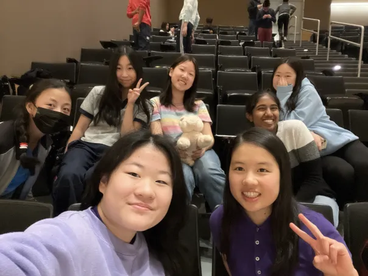
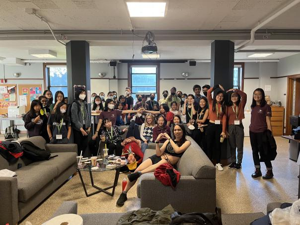

History
Spring '24
Athemath ran for the seventh time from February to May of 2024. Eleven teachers taught courses to eighty-three students.
Some things that happened during Spring '24:
- Athemath TA's gave insightful seminars about philosophy of math and life, started the Problem of the Day, and shared their thought processes as they live-solved math problems.
- Athemath sent teams to the February Harvard-MIT Math Tournament and Carnegie Mellon Informatics and Math Competition.
- Athemath alumni Ivy Guo, Greta Qu, and Catherine Xu qualified for the Math Olympiad Program, and the latter two will be Athemath teachers in the fall!
- Athemath teachers Hannah Fox and Jessica Wan, the former of which is also an alum, won gold medals at the European Girls' Math Olympiad!
- Athemath teacher Jessica Wan became the first girl to qualify for the USA International Math Olympiad team in 17 years!
Fall '23
Athemath ran for the sixth time from September to December of 2023. Eleven teachers taught courses to eighty-five students.
Some things that happened during Fall '23:
- Athemath doubled its staff size and activity in our online Discord lounge!
- Athemath alumni Selena Ge, Catherine Xu, and Ivy Guo placed 2nd, 5th, and 13th in the nation at the Math Prize for Girls competition, and Athemath staff members Jessica Wan, Hannah Fox, Emily Yu, and Raina Wu placed 1st, 3rd, 8th, and 11th!
- Athemath alumnus Ivy Guo, as well as staff members Hannah Fox and Jessica Wan, won gold medals at the Math Prize of Girls Olympiad! Alumnus Catherine Xu, as well as staff members Emily Yu and Vivian Loh, won silver medals, and staff members Angeline Zhao and Kristine Lu won bronze medals!
- Athemath sent teams to the Princeton Math Competition, and the November Harvard-MIT Math Tournament. We also sent teams to the CMU Womens' Math Competition, and won 3rd and 5th place teams! 
Spring '23
Athemath ran for the fifth time from February to May of 2023. Six teachers taught courses to thirty-six students.
Some things that happened during Spring '23:
- Athemath sent teams to the Princeton Math Competition, the Stanford Math Tournament (online), and the Online Monmouth Math Competition!
- Athemath alumni Emily Yu and Hannah Fox qualified for the Math Olympiad Program!
- Athemath teachers Jessica Wan and Vivian Loh won gold medals at the European Girls' Math Olympiad!
Fall '22
Athemath ran for the fourth time from September to December of 2022. Seven teachers taught courses to forty-two students.
Some things that happened during Fall '22:
- Athemath met up during Math Prize for Girls 2022! S22 Alumni Emily Yu and Catherine Xu placed 5th and 6th in the nation! 
- Athemath alumni Emily Yu and Ivy Guo won silver medals at the annual invitational Math Prize for Girls Olympiad!
Spring '22
Athemath ran for the third time in the spring of 2022, from February to April 2022. Eight teachers taught courses to thirty-nine students.
Snapshots from Spring '22:
- Placing 9th in the Guts round at the Stanford Math Tournament.
- Playing TeXnique.
- Groupsolving.
- Speed friending.
- Freehanding circles.
- Athemath meet up at the G2 Math Program!
Fall '21
Athemath ran for the second time in the fall of 2021, from September to December 2021. Four teachers taught courses to fourteen students.
Snapshots from Fall '21:
- Making two headed turtles in sculpture.
- Cheating at Codenames.
- Baba is You.
- Melanie Wood gave a talk!
- Plank Countdown.
Spring '21
After a great deal of preparation in the preceding months, our Virtual Program pilot, the Spring 2021 session, started in March 2021. Four teachers taught our very first courses to twenty students.
Some fun things that happened at Spring '21:
- Linguistics streams.
- Spontaneous orchestra (the first one).
- The n - 5 game.
- The Half of It.
- Getting trolled by hard AIME problems.
- Conversations about femininity.
- Gymnastics.
- Folding origami with your feet.
Here is what our students thought of it:
"I really liked it! I think it helped me improve my geometry skills more. The people were really cool and fun to hang out with (both students and staff), and they were all really admirable. I had something to learn from every one of the people."
"Overall, I really liked this program. I learned not only math but also other stuff, such as Hanabi, and I think the community is very nice and helpful."
"The program was fun and informative! It almost felt like a summer camp, especially since I hope to keep in touch with the lovely people I met through the program!"
It wasn't perfect, but it was a good experience for everyone involved and we're super excited to iterate and improve in the fall!